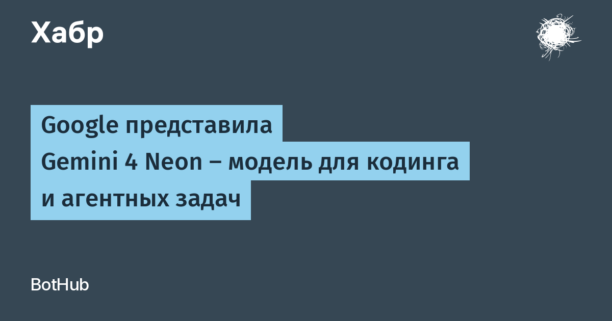

Google представила Gemini 4 Neon — четвёртую модель семейства Gemini 4 примерно за семь недель (после Argon, Carbon и Hydrogen). Neon встала посередине линейки: Carbon остаётся для сложных долгих проектов, Hydrogen — для быстрых повседневных запросов, а Neon рассчитана на агентные задачи, где мало сгенерировать ответ: нужно понять контекст, вызвать инструменты и выполнить цепочку шагов. Контекстное окно — 1 млн токенов, глубина рассуждений регулируется четырьмя уровнями от low до xhigh.
По данным официального анонса Google, Neon заняла первое место в Artificial Analysis Coding Agent Index с результатом 58.6, набрала 65,2% в Terminal-Bench 4.1 и 46,2% в FrontierCode 2.0 (на уровне по умолчанию high). В Intelligence Index той же Artificial Analysis модель получила 61 балл на уровне xhigh — третье место в общем зачёте, причём обошла более крупные и медленные модели. В научной секции заявлены лучшие результаты в классе: Terminal-Bench Science — 70,5%, RiemannBench — 84,0%, HLE-Diamond — 71,3%.
Отдельно Google выкатывает Gemini 4 Neon for cyber — версию для задач обороны: поиск уязвимостей, оценка рисков и помощь в исправлении кода. Модель показала 90,5% на SEC-bench Pro при примерно вдвое меньшей стоимости на задачу, чем у сопоставимых фронтир-моделей (русский пересказ на Habr добавляет 76% на сложном уровне AutoBaxBench). Доступ к ней получат проверенные специалисты в рамках программы Fairwind — в ближайшие дни. Google подчёркивает, что защита от серьёзного злоупотребления и prompt injection в Neon сохранена на уровне Gemini 4 Carbon.
Neon уже доступна через Gemini API и Google AI Studio: $3 за миллион входных токенов и $15 за миллион выходных, причём входные токены из кэша стоят $0,15 — скидка 95%. Подписчики Google AI Pro и Ultra получат модель в Antigravity, платные пользователи — в выпадающем списке приложения Gemini. Наблюдатели из Artificial Analysis отмечают: Google заметно ускоряет темп релизов, и Neon — попытка дать «качество почти Carbon» по скорости и цене модели эконом-класса.
Для команд, которые гоняют ИИ-агентов на репозиториях, главное — не рекорды бенчмарков, а стоимость ошибки: кэш входных токенов за $0,15 и регулируемая глубина рассуждений позволяют дёшево прогонять длинные агентные сессии. Ну и отдельный сюжет — ставка Google на «ИИ-защитника»: модель, которая ищет дыры и проверяет их эксплуатацией, но доступ к ней выдают по именному допуску. Похоже, эра свободно доступных фронтир-моделей в кибербезопасности заканчивается — вместо неё Google выбирает закрытые программы с именным допуском.